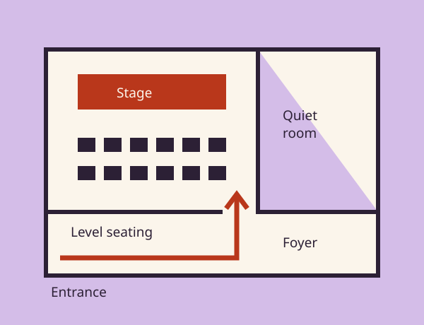

From pavement to performance
The St Mary’s Street entrance has a level threshold and a 95cm clear opening. The foyer, main room, studio, quiet room and accessible toilet are on the ground floor.
04 / Access at Cuefold
You know what helps you enjoy an evening. Here are the details, without the guesswork. If something isn’t covered, we’re happy to talk it through.

A guide to the ground-floor spaces. The route from the entrance to the main room has no steps.
The St Mary’s Street entrance has a level threshold and a 95cm clear opening. The foyer, main room, studio, quiet room and accessible toilet are on the ground floor.
There are four removable-seat wheelchair spaces in the main room and two in the studio. Companion seating is alongside. Ask for an aisle seat or an end-of-row place when you contact us.
The quiet room is open from 45 minutes before curtain-up. You can leave and re-enter any performance with help from a steward; we’ll show you the easiest route.
Find your performance
A caption screen carries dialogue and important sound information. The listing marks which performances include captions; tell us if you need a clear view of the screen.
A live description fills in visual detail through a headset. A short touch tour is offered 45 minutes before selected shows, subject to the production’s set.
House lights stay gently raised, sound levels are softened and there is freedom to move. A visual story is available from the box office before your visit.
Keep what helps
Save practical preferences for your visit planner and ticket request. These stay in this browser where storage is available, and are never sent without you choosing to contact us.
These preferences are planning notes. The box office will confirm any equipment or specific seat requirements with you.
Yes. Assistance dogs are welcome in all public spaces and in the auditorium. Tell us at the time of your request so we can allow comfortable space, or arrange for a steward to look after your dog during the show.
A portable hearing loop is available in both rooms. Please ask a steward before taking your seat. Captioning and audio description are offered at the specifically marked performances.
Each show page lists the effects and themes we currently know about. Productions can develop during rehearsal, so call the box office if you need a specific answer before deciding.